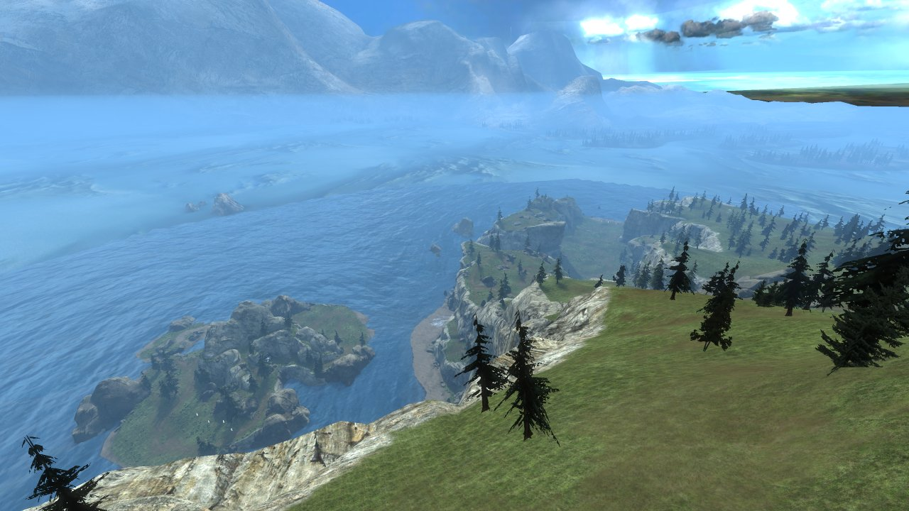
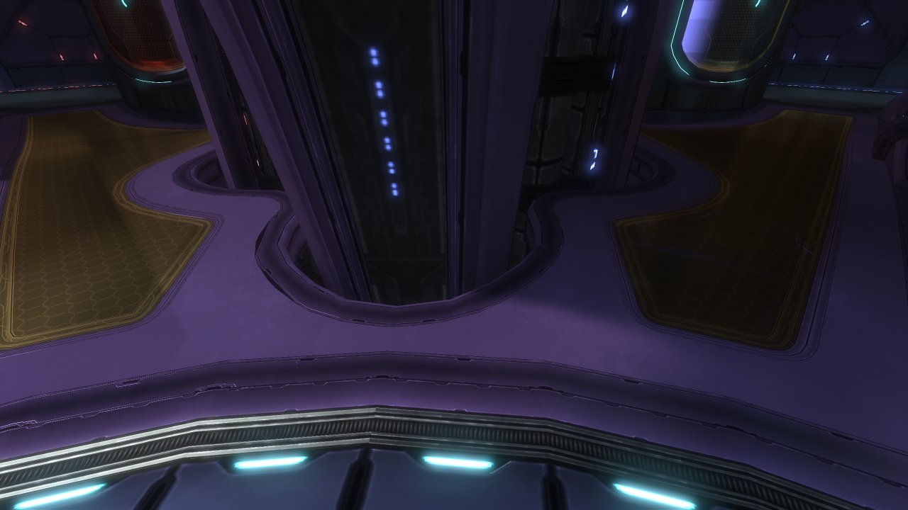
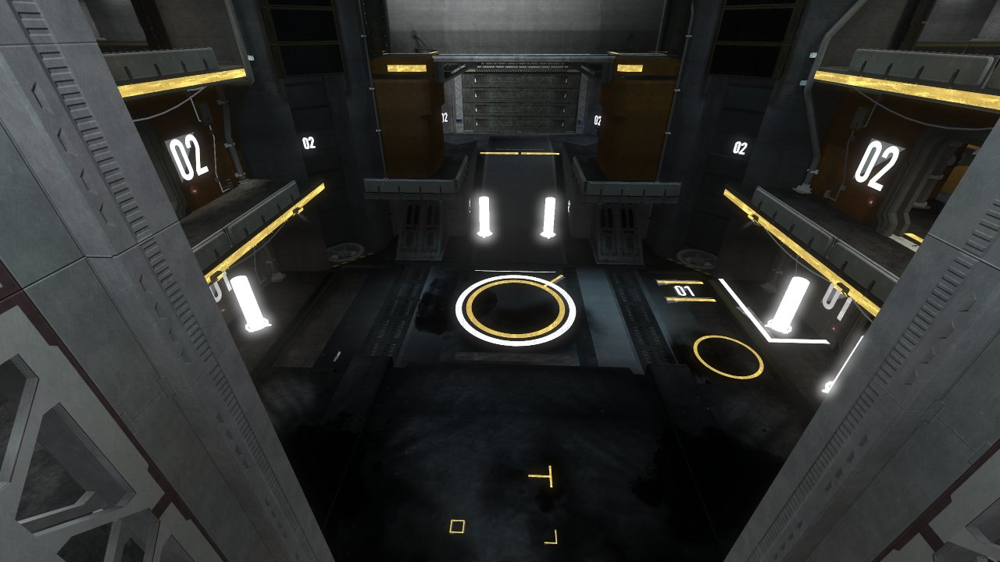
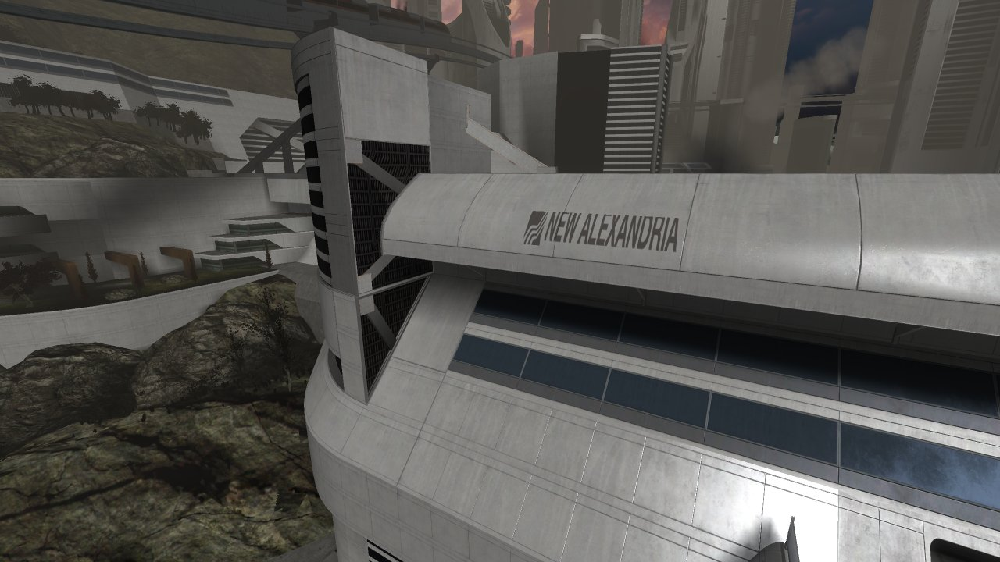
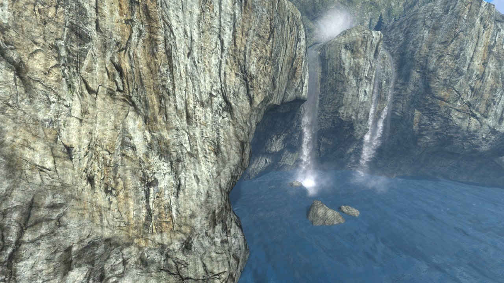

Halo Map Studio
A standalone map viewer and Forge editor for Halo: Reach in The Master Chief Collection (PC). It reads your installed game's map files directly, renders them with the engine's own lighting, materials and effects, and lets you open, edit and save Forge map variants (.mvar) without launching the game.
Download (GitHub Releases) Getting started Scripting reference

HMS_MAP=forge_halo).What it does
Browse every installed map
Built-in maps, Steam Workshop maps and (experimentally) Halo 4 caches are found automatically from your Steam library.
Open and save Forge variants
Open any .mvar (shipped, matchmaking or your own MCC saves), edit objects and their Forge properties, and write it back.
Blender-style editing
Grab / rotate / duplicate with G R Shift+D, axis locks, surface magnet, gizmos, mass edit and full undo.
Construction (CAD) tools
Dotted guides, circles and squares, face-to-face mating, anchors, mirroring and "fill an edge with N copies".
Engine-faithful rendering
Baked lightmaps, auto-exposure, bloom, fog, water, particles and sky are decoded from the map's own tags. Optional real-time probe GI and a path-traced bake.
Scripting & automation
A small command language for placing and editing objects, driving the camera and taking screenshots — from the in-app console, a script file, or an MCP server for LLM agents.
Headless rendering
Render any map or variant to a PNG from the command line, with no window, for batch screenshots.
Halo 4 (experimental)
View-only rendering of Halo 4 maps with baked lightmaps, scenario objects and read-only map variants.
Screenshots


45_aftship).
45_launch_station).
50_panopticon).

ca_forge_ravine), experimental view-only mode.All screenshots on this site were rendered by the tool itself with the headless renderer; none are captured from the game.
Requirements at a glance
- Halo: The Master Chief Collection installed via Steam, with the Halo: Reach content. You must own the game — nothing from the game is included in the download.
- A GPU with Vulkan (Linux) or DirectX 12 / Vulkan (Windows). A CPU software rasteriser is used as a last resort but is very slow.
- Windows x64 or Linux x64. Loading Forge World peaks at roughly 4.5 GB of RAM and settles around 1 GB afterwards.
See Getting started for installation and first launch.
Licence summary
Halo Map Studio is licensed under the PolyForm Noncommercial License 1.0.0: free for personal, hobby, educational and other noncommercial use. Any commercial use requires a separate commercial licence from the copyright holder. Details, examples of what counts as commercial use and how to obtain a licence are on the Licence & commercial use page.
Status
Halo Map Studio is under heavy development. The current release line is v0.1.0. The Reach viewer/editor is the focus; Halo 4 support is experimental and view-only. The user interface is being reorganised at the time of writing — pages that describe panels and menus say so at the top.